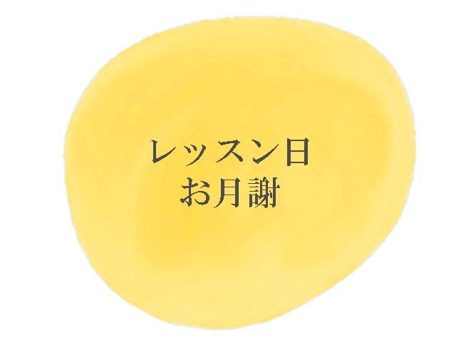
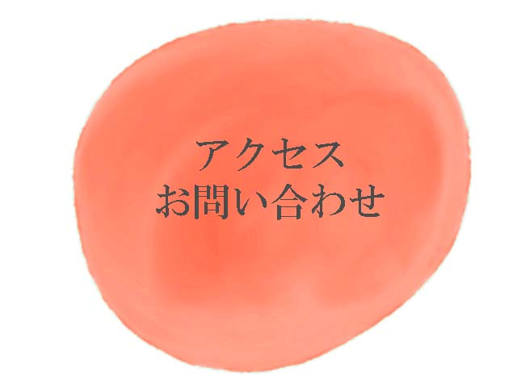
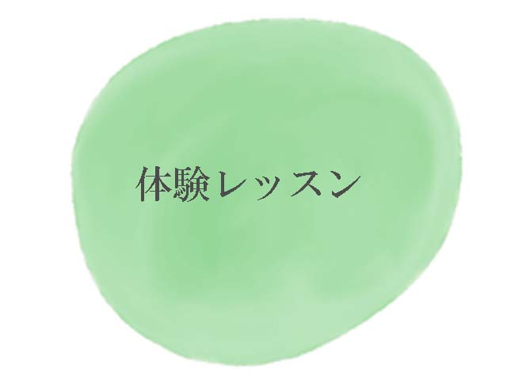
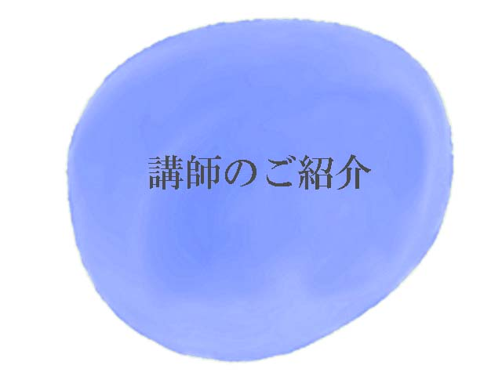
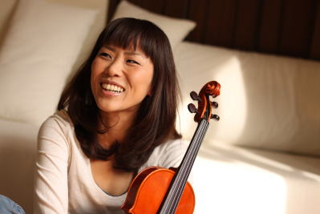
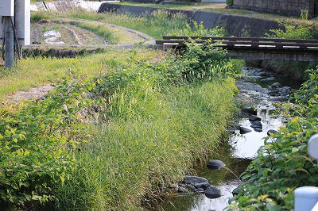
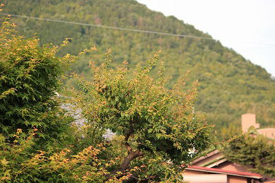
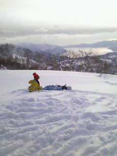
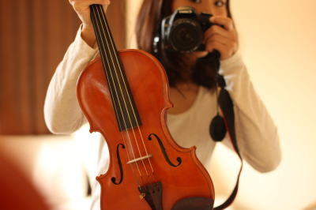
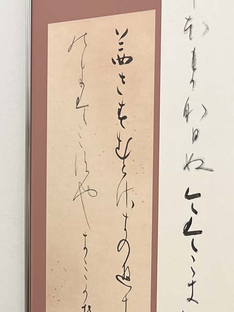

ノワ ヴァイオリン教室

心に、一番近い楽器
ヴァイオリンを始めてみませんか？
横浜 反町に３月、新規開講


レッスン日
日曜日 １０：００～１８：００
月３回
月３回、日曜日のみのレッスンです
半年分のスケジュールをお渡しします
お振替は、オンラインのレッスンにて対応いたします
講師都合のお休みにつきましては、後日対面レッスン日を設けます
お月謝
３０分レッスン １１,０００円
（小学校２年生以下）
４０分レッスン １４,０００円
（小学校３年生～大人）
設備費として、別途年間２０００円頂戴いたします
アクセス
横浜市神奈川区高島台１５－１１
東急東横線 反町駅より徒歩８分
横浜市営地下鉄 三ツ沢下町駅より徒歩１４分
横浜駅より徒歩１５分
お問い合わせ
０９０－５８７２－９２６７
（レッスンなどで出られないことがあります）
gurugurujiri22★gmail.com
（★を＠に変えてください）
インスタグラム
体験レッスン
３月の体験レッスン日 ３／１５ (日)
４月の体験レッスン日 ４／１９（日）
１０：００～１８：００
ご予約制です
４０分 ２０００円
即ご入会の方は、初回のお月謝より１０００円お値引きいたします
ヒヤリング、楽器体験、教室のご案内で４０分を予定しております
楽器のご用意がありますので、特にお持ちいただくものはございません
体験レッスンのお申込み
メール
件名を「ノワ体験レッスン」として、
・お名前
・ご連絡先
・ご希望の体験レッスン会の日時
を添えて、
gurugurujiri22★gmail.com まで
（★を＠に変えてください）
※２日以内にお返事がない場合、メールが届いていないことがあります
別のメールアドレスから再度ご連絡いただくか、
またはお電話くださいますと幸いです
お電話
０９０－５８７２－９２６７
インスタグラム DM
・お名前
・ご連絡先
・ご希望の体験レッスン会の日時
を添えて、こちらから→
講師紹介
斉藤 久仁子

岐阜の田舎の方で生まれ、
（美濃市 山に囲まれ、川が綺麗で、本当に素敵なところです）
３歳からバイオリンをはじめる
バイオリン素人の父（自称アマチュア アマチュアの方にに失礼だと今は思う）
と一緒に、毎週 片道１時間かけてレッスンに通っていました


岐阜県立加納高校 音楽科を経て、
桐朋学園大学 音楽学部 演奏学科を卒業
家族
日曜大工が好きでゲーマーの主人
女子高生を斜めに謳歌している娘
見た目は中学生、心は５歳の息子 の３人家族です
わたしの趣味
スノーボード
夫婦共々ジャンキーで、激しく雪山に通っていました
現役時代は飛んだり跳ねたり擦ったり
現在は子育て中→運動不足のため自粛ですが、
徐々に雪山復帰していきたいと目論んでいます
が、どうなることやら
下の写真は、北海道ルスツにて
洞爺湖が見えます
まったく、派手なウエアですね！

写真
子供が小さい頃は子供の写真を撮っていました
レンズ云々、奥が深いですね～
いつのまにか、世はミラーレスの時代に
でもやっぱりファインダーを覗きたいので、
愛機は、サンタさんがくれたCanonの９０D
今はお散歩に持っていったりして楽しんでいます
たまにインスタグラムに写真をあげています

車
車好きの旦那様の影響で、愛車は６速ＭＴ
左ハンドルのＭＴのボルボ Ｖ７０Ｒ
地味だけど、たぶん日本に１台しかない変な車
ガソリン車なのに、充電しながら乗っています
ご興味あればなんでか聞いてください
ボルボの前は、アルファロメオの１５６のＭＴに乗っていました
Ｖ６でとても良い音でした
エンジンをかけるときは祈りながら・・・懐かしいです
書
小さい頃に手習いでやっていた程度だったのですが、
ご縁があり、かなを勉強中です

国も時代も違うのに、
音楽も書も通ずるところがあるなぁとしみじみ
やはり苦手なところは書も音楽もいっしょ
今は、藤原行成さんが書いたと伝わる
「曼殊院本古今集」をお稽古中です
１１世紀の書です
実家の床の間にお軸をかけてもらうのをモチベーションに
頑張っています
TOPへ